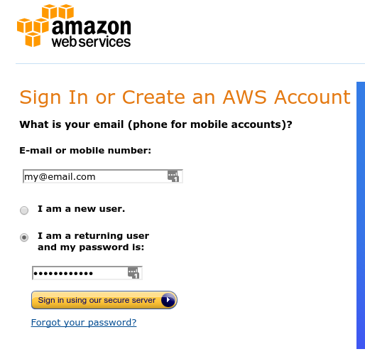
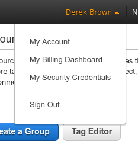
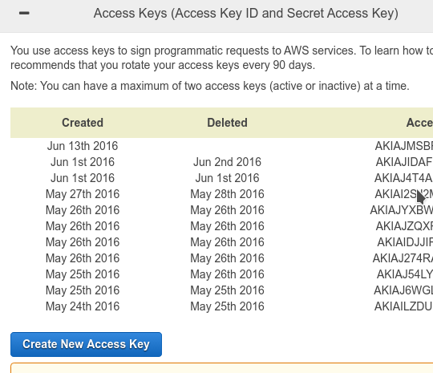
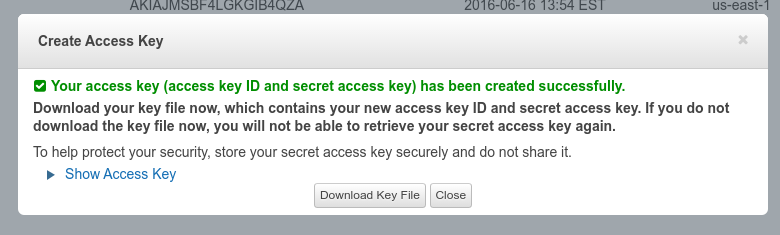
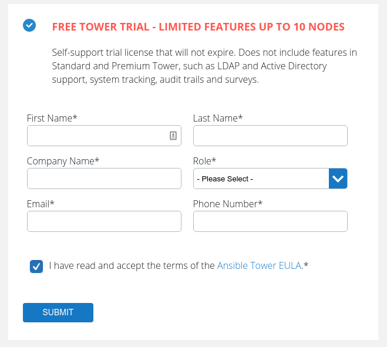

Development Installation
To make development and testing easier, we’ve developed a tool to simulate TuxLab’s infrastructure on your local machine. To do this, we use the Vagrant framework, a programmatic wrapper to the popular VirtualBox Virtual Machine. This provides one platform that can be used across all machines, allowing TuxLab’s architecture to work the same way regardless of your operating system or environment.
In order to set up TuxLab using vagrant, you must first install several frameworks and libraries on your local machine. These are:
- VirtualBox (netadp, netflt, guest-iso)
- Vagrant
- Vagrant Guests Plugin
- Ansible (Version 2.3 or above)
- SSHPass
The following set of instructions will walk you through installation on our currently supported platforms.
Red Hat / CentOS
Fedora
Ubuntu / Debian
Before you Begin
In order to ensure the installation process for your prerequisite programs goes smoothly, you should first make sure your package lists and installed programs are all up-to-date. Run the following in Bash:
sudo apt-get update
sudo apt-get upgrade
Installing VirtualBox
Luckily, you can install virtualbox via Ubuntu’s package manager with the command:
sudo apt-get install virtualbox
Installing Vagrant
Arch Linux / Manjaro
Production Installation
TuxLab uses Ansible to automate the installation process, which makes TuxLab completely infrastructure-agnostic. However, setting up the application using your own infrastructure is an advanced procedure. To simplify this, we have created a local Ansible script which automates the process of installing TuxLab on Amazon Web Services, and includes features like auto-scaling and provisioning.
AWS
Create an AWS Account
In order to provision instances on AWS, you will need to create an AWS Account. Students and instructors are eligible to receive free credits for AWS via their University, if you are looking to try out TuxLab without an initial cost. To register, simply complete the form on AWS’ website: 
Obtain API Key
You will then need to obtain an API Key, allowing the TuxLab installer to provision infrastructure on your account. In order to do this, navigate to the “My Security Credentials” dropdown:

Then choose “create new access key”:

And finally, choose to download the key file. We will use this later in running the install script.

Ansible Tower
Obtain License Key
In addition to the TuxLab server applications, the installer will install Ansible Tower, a tool used to automatically scale, provision and check the health of the TuxLab service. Ansible Tower is an open source product, however it requires a license for updating, support, and ease of operation. All users are entitled to a free Ansible Tower license for up to ten nodes (which is substantially larger than what is needed of most TuxLab installations). First, complete the registration online:

Accept EULA
You will then be emailed a license key, which is simply a JSON file. You need to add a property; "eula_accepted" : true, to this file, confirming that you have read the End User License Agreement. Save this file for later use.
Setup Ansible
Install Ansible and the prerequisites as explained earlier in the Development Installation section.
In addition, you need to install the boto package, which is used for interfacing with AWS. The easiest way to install this is using PIP, which should work on all platforms:
pip install boto.
Setup MongoDB
TuxLab relies on an external installation of MongoDB to store application data. There are a number of ways to setup MongoDB, some of which are outlined in our later section on the Mongo component of TuxLab. Prior to proceeding, it is important to make note of your MongoDB URL and authentication details, and insert them into the appropriate variable in the next step.
Configuring TuxLab
Prior to running the installation script, it is important that you review and edit the configuration settings. These settings are outlined in detail in the configuration section of the documentation.
Installing TuxLab
Run the following command, substituting the AWS_ACCESS_KEY_ID and the AWS_SECRET_ACCESS_KEY with the values you downloaded previously in the AWS keyfile:
export AWS_ACCESS_KEY_ID=XXXXXXXXXXXXXX
export AWS_SECRET_ACCESS_KEY=XXXXXXXXXXXXXXXXXXXX
ansible-playbook site.yml
You will be prompted to enter an Ansible password, which you should take note of. You will use it later to connect to the internet Ansible dashboard.
Setup DNS
Finally, create DNS records to route your domain to the TuxLab instance. If you wanted for the tuxlab app to be displayed at domain.com, you would set the following records:
NS *.domain.com <SWARM_NODE_IP>
A domain.com <LOAD_BALANCER_DNS_NAME>
Alternatively, If you are using Amazon Route 53, you can use Aliases to more easily configure these IP addresses.
Viewing Status of TuxLab Installation
Once the command has run to completion, you will see a number of instances active on your AWS account:
Locate the one labeled “Ansible_Tower,” and note its public DNS Address. If you enter this into your browser, prefixed by https://, you will pull up the Ansible Tower dashboard, which you can use to check the status of your TuxLab installation.
Administration
Lab API
TuxLab is centered around the concept of a “Lab”- which consists of 1) a series of instructions presented to the user 2) a Linux Environment setup to complete these tasks and 3) a set of tests to verify the students’ completion of a task, as well as access student data. All of these things are defined in a single Javascript file- called a LabFile. A LabFile follows a particular format, described below.
Creating the Lab
var gitLab1 = new lab();
Every lab file is a modification on a lab object, created and initialized on the server side. This gives the tuxlab API the ability to change and adapt to advances in the server side code and other tools being used, without needing to modify any specific lab file.
Thus, all labfiles must start with creating a new lab object. By running the command var myLab = new lab();
Setup
var setup = function(env){
env.init()
}
Setup is a function that takes as an input an environment object. The setup function runs for each individual user before the lab is started. Therefore, it is essential that it starts with an eenv.init() call which initializes the environment for the user.
Although the setup function can consist on only env.init(), it is important to provide as many of the tools, files and folders a student might use in the setup function to increase efficiency.
Tasks
Tasks are the individual steps a student goes through. Instructors can create as many tasks per lab and grade them and give feedback to students directly from the labfile using the student API. Each task is created by a lab.newTask method, taking as input the title, a setup and verifier functions.
Task setup
var setup = function(env){
env.start()
.then(env.shell("labVm","git clone https://github.com/cemersoz/gitlab-setup1")
.then(env.shell("labVm","./gitlab-setup1/deploy.sh"))
.then(env.shell("labVm","rm -rf ./gitlab-setup1"));
}
Each task setup is a function, taking as paramater an environment object. This function is called for each student environment to setup the tasks for each student. Every setup function MUST start with a return env.start() statement, although other steps can be chained to the end. It is crucial for the API to have the setup function return an environment promise.
It is important to note that while cloning git repositories is possible in the setup, it takes individual time and data connection for each user which are crucial and expensive resources. We suggest using regular unix commands and not relying on git as much as possible.
Task verify
var verifier = function(env,student){
return env.start()
.then(env.shell("labVm","pwd /"))
.then(function(sOut,sErr){
if(sOut.includes("my_dir")){
student.setGrade(1,[2,2]);
return env.resolve();
}
},function(){
student.setGrade(1,[0,2]);
student.feedback(1,"# Task failed\n## you did not create the directory \"my_dir\"");
return env.reject();
});
};
Each task verify is a function taking as parameter an environment object and a student object. The verifier is run when a student clicks the verify button. A verifier function must result either in an env.resolve() or an env.reject() statement.
For graded tasks, it is important to set the grades of the students in the verifier, depending on their progress. It is also possible to give situation-specific feedback, in markdown format, using the student.feedback function call.
Task Description
/*@Task1
# This is Task1
## You can write markdown as a comment!
### Isn't that cool!
*/
Task descriptions are written in the markdown format, also in the labfile. You can directly write your description, anywhere on the labfile, starting with @task_name in any multi-line comment. All task description are parsed out from labfiles by our regular expression matcher and added to the database! Coming with the beta release, you can add your markdown descriptions in our very own markdown formatter!
Creating and Chaining Tasks
Lets create a task with the setup and verifier from above.
var task1 = lab.newTask("mkdirTask",setup,verifier);
Tasks are created by the lab.newTask call, with paramaters taskName, setup and verifier functions.
Lets pretend we have other functions and create more tasks…
var task2 = lab.newTask("cpTask",setup2,verifier2);
var task3 = lab.newTask("mvTask",setup3,verifier3);
var task4 = lab.newTask("rmTask",setup4,verifier4);
Now lets chain our tasks in the tasks() method…
var tasks = function(){
mylab.init()
.nextTask(task1)
.nextTask(task2)
.nextTask(task3)
.nextTask(task4);
}
Tasks are chained using the nextTask method, in a function named tasks. Task chains should start with a lab.init() call.
Export
module.exports = myLab;
At the end of the lab file, You must export the lab object you created and modified, exporting it in the standard npm way with the module.exports command.
Manipulating the VM
In order to setup, and control the VM, TuxLab provides access to the env object, which allows you to control the VM, and even create other VMs:
All API calls are easily chainable
env.init()
.then(env.shell("labVm","echo hello world"));
The Environment API consists of functions that allow users to create, modify and run commands on docker containers, reliant on the docker remote API. All functions are promise.js based and can be chained very easily with .then commands.
env.init()
.then(env.shell("labVm","echo hello world"),
/*failure case*/
function(err){ console.log(err);
})
.catch(/*general failure case*/);
Similarly, errors can be thrown and caught either at individual steps or after full execution -or both-, using the promise.js standard of either providing a failure case in the Promise.then case, or using a .catch statement
Env.init()
Initializes the environment for a unique student, creating a lab Virtual Machine for each student and allowing them to connect to it remotely, via their own terminal or our browser interface
Env.start()
Is a placeholder for chaining.
Env.shell()
env.start()
.then(env.shell("labVm","echo hello world"))
.then(function(sOut, sErr){ console.log(sOut,sErr);});
Don’t forget, you can just clone git repositories.
env.start()
.then(env.shell("labVm","cd /"))
.then(env.shell("labVm","git clone https://github.com/learnlinux/tuxlab-app"))
.then(env.shell("labVm","./deploy.sh"));
Env.shell allows running classic shell commands in any Virtual Machine created using the Env API. The call Env.shell(vmName, command) results in a promise, resolved with standard out, standard error or rejects with null and an error. Every command in the student environment, aside from creating, updating, removing or networking virtual machines are meant to be implemented through env.shell().
Keep in mind that env.shell can easily be used to clone a git repository of your choice and run any executable you would like to put there since env.shell is capable of running any unix command. Including git clone and many others!
Env.createVm()
env.start()
.then(env.createVm({createOptions: {name: "Jonathan"}});
Env.createVm creates a virtual machine in addition to the labVm. Although not necessary for many labs, creating multiple virtual machines may allow the creation of more versatile labs. Using Env.network -to be implemented in beta- you can network together any number of Virtual Machines in whatever way you wish to create many different labs such as SSH-connection, server-hacking …
Env.updateVm()
var opts = {
attachStdErr: true,
name: "Jeff",
CMD: ["/bin/sh"]
}
env.start()
.then(env.updateVm("vm1",opts));
Env.update vm, updates a virtual machine with the given options. Although it can work with the labVm and all other Vms, we highly suggest not using it to update labVm as this may affectthe student connection
Env.removeVm()
env.start()
.then(env.removeVm("Jeff"));
Removes any virtual machine except the labVm. It is suggested that you use the removeVm call to remove virtual machines after they’ll no longer be used to save resources. All virtual machines are terminated after a pre-determined countdown or when the student completes the lab.
Accessing Student Data
Inside of the functions described in the LabFile, you are given access to a Student object, which allows you to save data to the Users’ account, provide the user feedback, and save grades for the user.
Student.feedback()
var md = `
# This is an example feedback MD
## It works in full markdown
You can do most things with it
`;
student.feedback(1,md);
Shows the feedback markdown provided to the student below the original task markdown once the verifier function runs. It is recommended that this is only called in the verifier function.
Student.setGrade()
student.setGrade(3,[2,4])
Sets the grade of the student for a specific task to the given tuple. Takes two parameters, taskNo, gradeTuple. Grade is set to tuple[0] out of tuple[1]
Student.incrementGrade()
student.incrementGrade(3,2);
increments the grade of the student for a specific task by the given number of points
Student.getTaskData()
env.start()
.then(student.getTaskData(2))
.then(function(data){console.log(data)});
Like env functions, student.getTaskData can only be called as part of a chain starting with an env.init() or env.start() call. It is a promise based function that returns a promise that either resolves with the data or rejects. For non-corrupt databases, rejecting should not be an issue. The call takes as a parameter the index -from 1- for which the data is asked.
Student.setTaskData()
student.setTaskData(2, data);
asynchronously sets the task data to the data provided. The first argument provided in the call is the task number -starting from 1- for the task to modify.
Student.getLabData()
env.start()
.then(student.getLabData())
.then(function(data){ console.log(data) });
Like env functions, student.getLabData can only be called as part of a chain starting with an env.init() or env.start() call. It is a promise based function that returns a promise which either resolves with the lab data or rejects. For non-corrupt databases, rejecting should not be an issue.
Student.setLabData()
student.setLabData(data);
Asynchronously sets the lab data to the data provided.